Manual de Usuario — Sistema de Gestión para Lubricentros
FiltCar es un sistema de gestión pensado para lubricentros: controla ventas, stock de artículos, caja, clientes, proveedores y turnos desde un solo lugar, accesible desde cualquier computadora con internet.
El día a día de un lubricentro implica llevar registros en papel o planillas sueltas: ventas, stock de aceites y filtros, plata en caja, deudas de clientes. FiltCar centraliza todo ese proceso en un sistema único.
FiltCar es de uso exclusivo de un lubricentro: cada cliente tiene su propia instalación del sistema, con su propia base de datos, usuarios y configuración, totalmente independiente de otros lubricentros.
FiltCar tiene tres roles de usuario. Los tres pueden operar el día a día del lubricentro (ventas, artículos, clientes, caja, etc.); lo que cambia entre ellos es el acceso a la sección de Administración.
Acceso completo al sistema, incluida la gestión de usuarios y la auditoría de actividad.
Opera el lubricentro igual que el Administrador, pero con acceso de solo lectura a la lista de usuarios.
Rol operativo enfocado en el mostrador: ventas, presupuestos, clientes y stock.
Cada usuario recibe sus credenciales (usuario + contraseña) del Administrador. El Administrador es el único que puede crear nuevos usuarios.
| Función | Administrador | Empleado Admin | Empleado Ventas |
|---|---|---|---|
| Artículos, Clientes, Proveedores | ✅ | ✅ | ✅ |
| Ventas, Presupuestos, Deudas | ✅ | ✅ | ✅ |
| Caja, Compras, Turnos, Informes | ✅ | ✅ | ✅ |
| Ver Usuarios | ✅ | 👁️ Solo lectura | — |
| Crear / editar / desactivar usuarios | ✅ | — | — |
| Ver Auditoría | ✅ | — | — |
La pantalla de acceso es lo primero que verás al abrir FiltCar. Solo necesitás tu usuario y contraseña para ingresar.
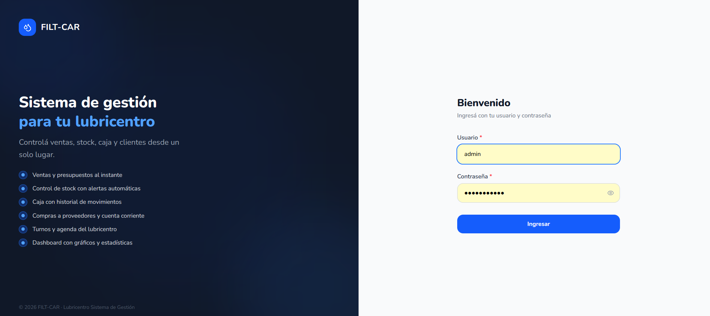
La parte izquierda resume las principales capacidades de la plataforma:
Si olvidaste tu contraseña, contactá al Administrador para que te genere una nueva desde la sección Usuarios. No hay recuperación de contraseña por email.
Una vez que iniciaste sesión, verás la barra lateral izquierda con toda la navegación. Desde ahí accedés a cada módulo y también podés cambiar tu foto de perfil y tu contraseña.
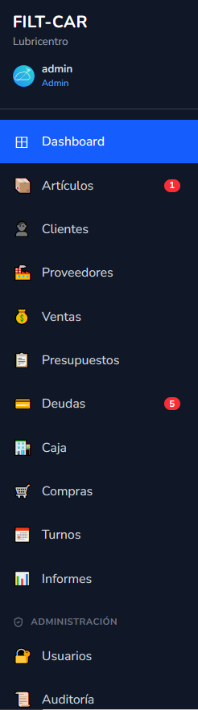
Debajo de "FILT-CAR / Lubricentro" aparece tu nombre de usuario y tu rol (Admin, EmpleadoAdmin o EmpleadoVentas). Hacé clic ahí para abrir el menú de cuenta, con dos opciones: Cambiar foto de perfil y Cambiar contraseña.
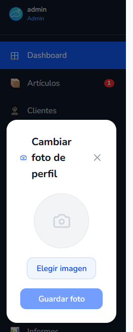
Hacé clic en "Elegir imagen", seleccioná una foto desde tu computadora o celular, y confirmá con "Guardar foto". La imagen se sube y queda asociada a tu usuario, visible para todos en la barra lateral.
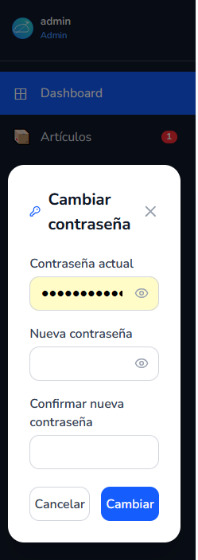
Ingresá tu contraseña actual, luego la nueva contraseña y repetila en "Confirmar nueva contraseña". Hacé clic en "Cambiar" para confirmar.
Los ítems de la barra lateral te llevan a cada módulo del sistema. Algunos muestran una badge roja con un contador (por ejemplo, artículos con stock bajo o deudas pendientes). La sección Administración, al final, solo aparece si tu rol tiene acceso a Usuarios o Auditoría.
Al final de la barra lateral está el botón "Cerrar sesión", que cierra tu sesión actual y te devuelve a la pantalla de login.
El Dashboard es la primera pantalla que ves después de iniciar sesión. Te da un resumen en tiempo real del estado del lubricentro: artículos, clientes, ventas del día, caja y deudas.
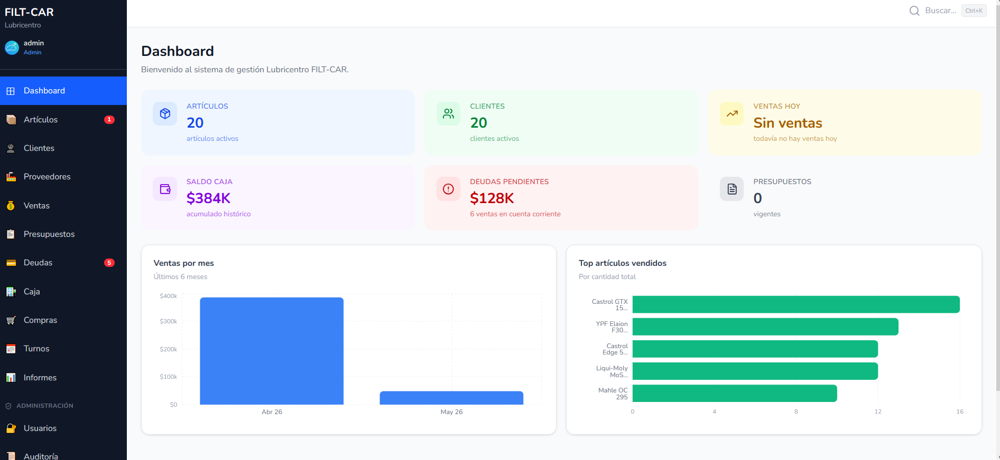
| Tarjeta | Qué muestra |
|---|---|
| Artículos | Cantidad de artículos activos en el catálogo |
| Clientes | Cantidad de clientes activos |
| Ventas hoy | Total vendido en el día de hoy |
| Saldo caja | Saldo acumulado histórico de la caja |
| Deudas pendientes | Total adeudado por ventas registradas a cuenta corriente |
| Presupuestos | Cantidad de presupuestos vigentes (no vencidos) |
Ventas por mes muestra la evolución de los últimos 6 meses en un gráfico de barras. Top artículos vendidos muestra el ranking de los 5 artículos más vendidos por cantidad de unidades.
Todos los números del Dashboard se actualizan al cargar la página. Si querés ver los datos más recientes, recargá la página.
El catálogo de Artículos es la base del sistema: ahí se registran los aceites, filtros y demás productos que vende el lubricentro, junto con su precio y stock disponible.
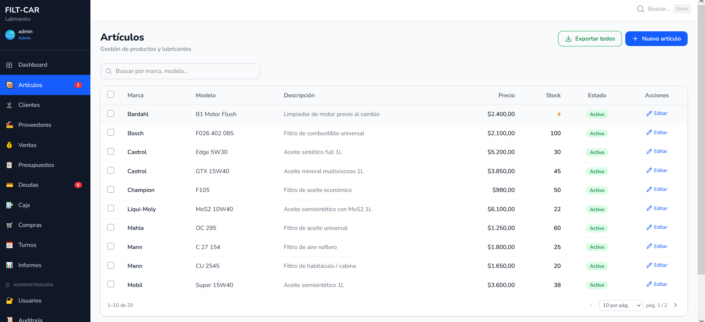
Cada fila muestra marca, modelo, descripción, precio, stock actual y estado (Activo/Inactivo). El buscador permite filtrar por marca o modelo. El botón "Exportar todos" descarga el catálogo completo en un archivo CSV.
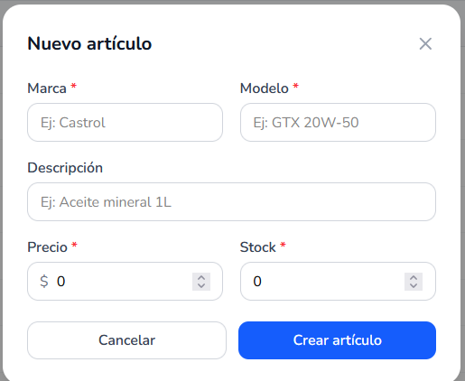
Hacé clic en "+ Nuevo artículo" y completá los campos:
| Campo | Descripción |
|---|---|
| Marca | Marca del producto (ej: Castrol, Mahle, Bardahl) |
| Modelo | Modelo o variante (ej: GTX 20W-50) |
| Descripción | Texto descriptivo adicional (opcional) |
| Precio | Precio de venta actual |
| Stock | Cantidad inicial disponible |
Desde la columna "Acciones" podés hacer clic en "Editar" para modificar los datos del artículo. Los artículos no se eliminan: se desactivan, y dejan de poder venderse mientras conservan su historial en ventas anteriores.
El stock de cada artículo se descuenta automáticamente cada vez que se registra una venta que lo incluye. Cuando el stock llega a un nivel bajo, aparece una badge roja en el menú de Artículos.
El módulo de Clientes centraliza los datos de contacto de cada cliente del lubricentro y te da acceso directo al historial de servicios y ventas de cada uno.
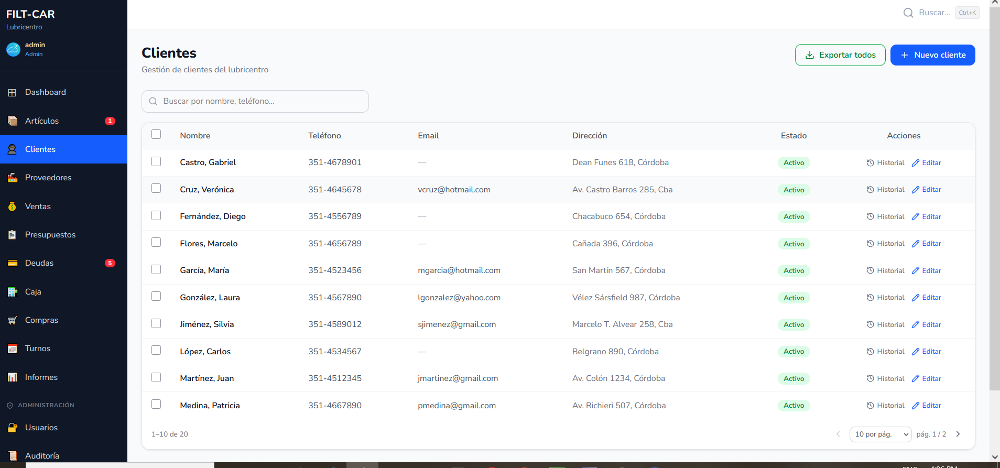
Cada fila muestra nombre, teléfono, email, dirección y estado. El buscador filtra por nombre o teléfono. El botón "Historial" de cada fila abre las ventas y movimientos asociados a ese cliente.
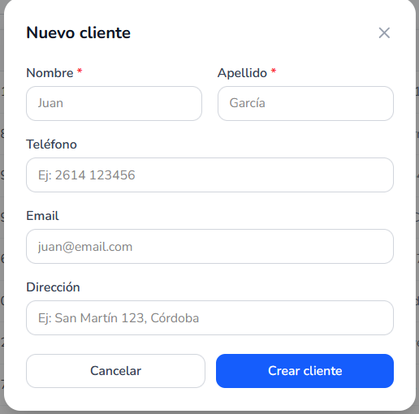
Hacé clic en "+ Nuevo cliente" y completá nombre y apellido (obligatorios), y opcionalmente teléfono, email y dirección.
Un cliente registrado puede elegirse al crear una Venta, un Presupuesto o un Turno, para que ese movimiento quede asociado a su historial.
El módulo de Proveedores registra las empresas que abastecen al lubricentro de aceites, filtros y otros productos, junto con su contacto comercial.
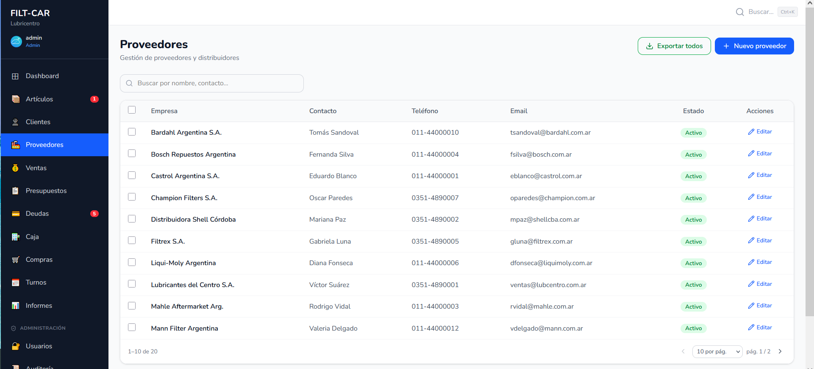
Cada fila muestra la empresa, persona de contacto, teléfono, email y estado. Igual que en Clientes, podés buscar por nombre o contacto y exportar el listado completo.
Hacé clic en "+ Nuevo proveedor" para dar de alta una empresa proveedora, o en "Editar" para actualizar sus datos. Un proveedor se elige al registrar una Compra, para llevar el historial y la cuenta corriente con cada uno.
El módulo de Ventas es el corazón operativo del mostrador: cada venta que se registra descuenta el stock de los artículos vendidos y queda en el historial con su forma de pago.
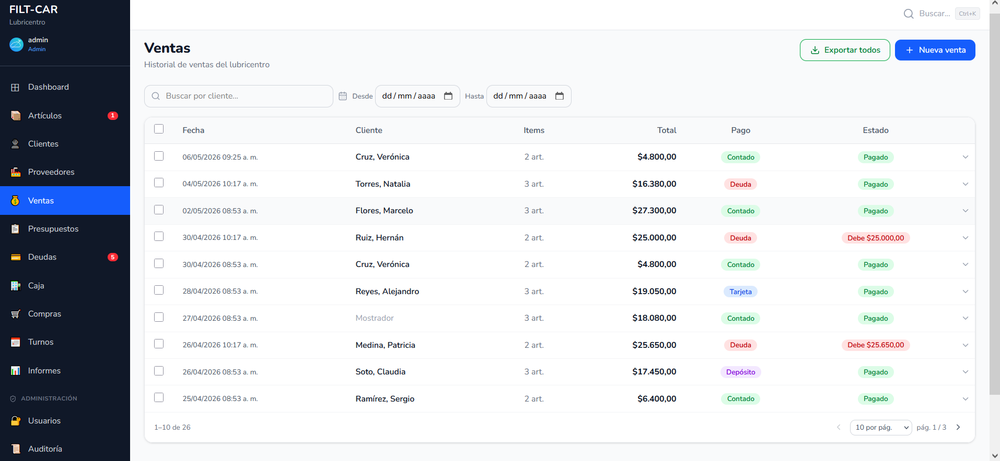
Cada fila muestra fecha, cliente (o "Mostrador" si no se asoció a un cliente registrado), cantidad de ítems, total, forma de pago y estado. Las ventas a cuenta corriente (Deuda) sin saldar muestran cuánto debe el cliente. Podés filtrar por rango de fechas o buscar por cliente.
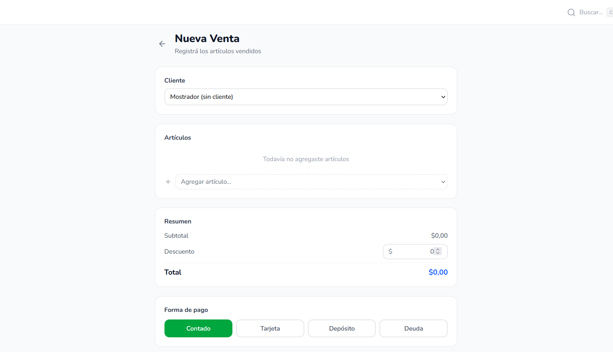
Si elegís "Deuda" como forma de pago, la venta queda registrada en el módulo de Deudas a nombre del cliente seleccionado, pendiente de cobro.
Los presupuestos son cotizaciones para clientes que todavía no se concretaron en una venta. Tienen una fecha de vencimiento y se pueden convertir en venta cuando el cliente acepta.
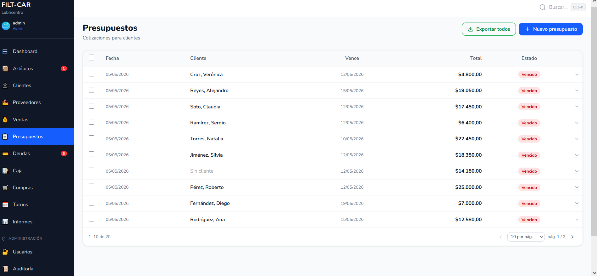
Cada fila muestra fecha de emisión, cliente, fecha de vencimiento, total y estado (Vigente o Vencido, según la fecha de vencimiento haya pasado o no).
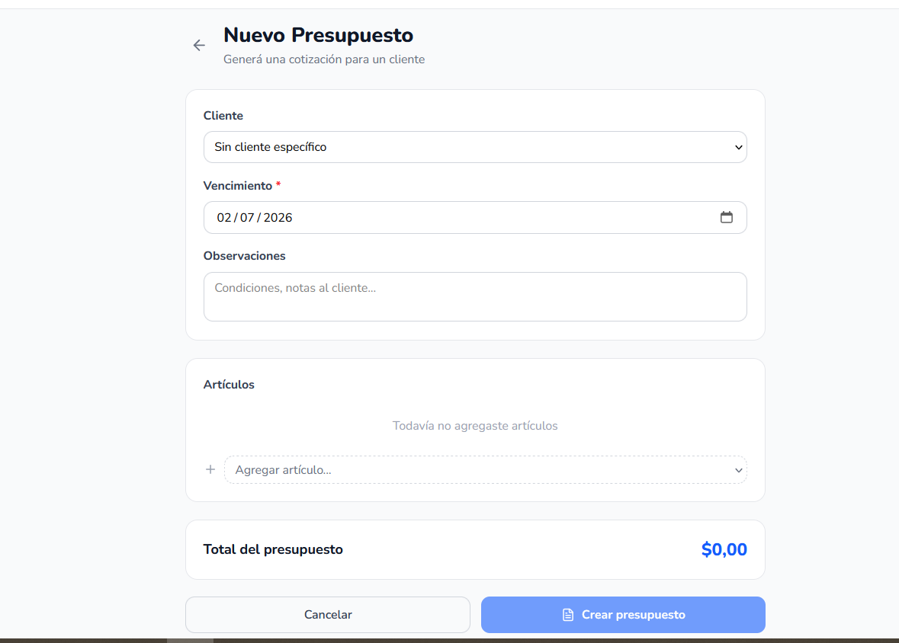
Hacé clic en "+ Nuevo presupuesto", elegí un cliente (opcional), una fecha de vencimiento, agregá observaciones si hace falta, y sumá los artículos a cotizar. El total se calcula automáticamente.
El botón "Exportar todos" descarga el listado completo de presupuestos en CSV, útil para hacer seguimiento comercial.
Esta pantalla reúne todas las ventas registradas con forma de pago "Deuda" que todavía tienen saldo pendiente de cobro.
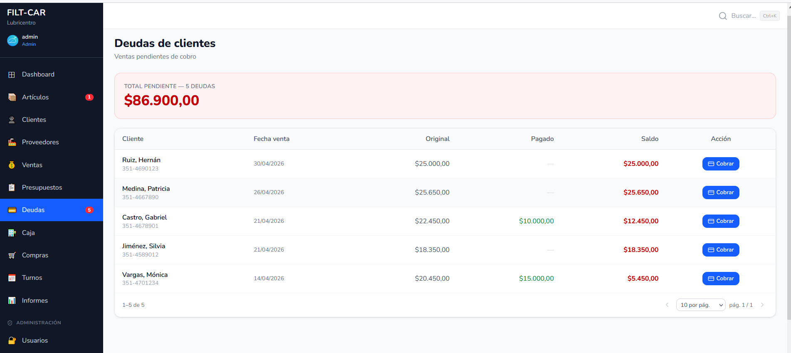
| Columna | Qué muestra |
|---|---|
| Cliente | Nombre y teléfono del cliente deudor |
| Fecha venta | Cuándo se originó la deuda |
| Original | Monto total de la venta a crédito |
| Pagado | Lo que el cliente ya abonó a cuenta |
| Saldo | Lo que todavía debe |
Hacé clic en "Cobrar" en la fila del cliente para registrar un pago parcial o total. El saldo se actualiza automáticamente y, si llega a $0, la deuda desaparece de esta lista.
El total acumulado de "Total pendiente" en la parte superior muestra cuánto dinero le deben en conjunto todos los clientes con saldo abierto.
El módulo de Caja lleva el registro de todo el movimiento de dinero del lubricentro: aperturas, ingresos, retiros, arqueos y cierres de caja.
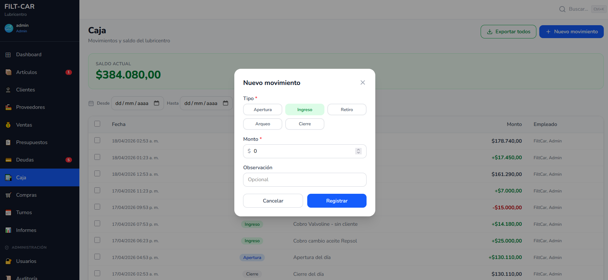
En la parte superior se muestra el saldo actual de la caja, calculado en base a todos los movimientos registrados hasta el momento. El historial debajo lista cada movimiento con fecha, monto y empleado que lo registró.
Hacé clic en "+ Nuevo movimiento" y elegí el tipo:
| Tipo | Cuándo usarlo |
|---|---|
| Apertura | Al iniciar el día, con el efectivo inicial en caja |
| Ingreso | Entrada de dinero fuera de una venta (ej: cobro de una deuda) |
| Retiro | Salida de dinero de la caja (ej: pago a un proveedor en efectivo) |
| Arqueo | Verificación del efectivo físico contra el saldo del sistema |
| Cierre | Al finalizar el día, con el efectivo final en caja |
Completá el monto y, opcionalmente, una observación, y confirmá con "Registrar".
Las ventas con forma de pago "Contado" generan automáticamente un ingreso en caja; no es necesario registrarlas manualmente.
El módulo de Compras registra la reposición de stock: cada compra a un proveedor suma artículos al inventario y, si no se paga en el momento, queda como saldo pendiente con ese proveedor.
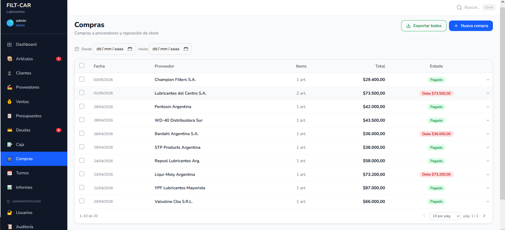
Cada fila muestra fecha, proveedor, cantidad de ítems, total y estado: Pagado o "Debe $X" si quedó saldo pendiente con el proveedor. Podés filtrar por rango de fechas.
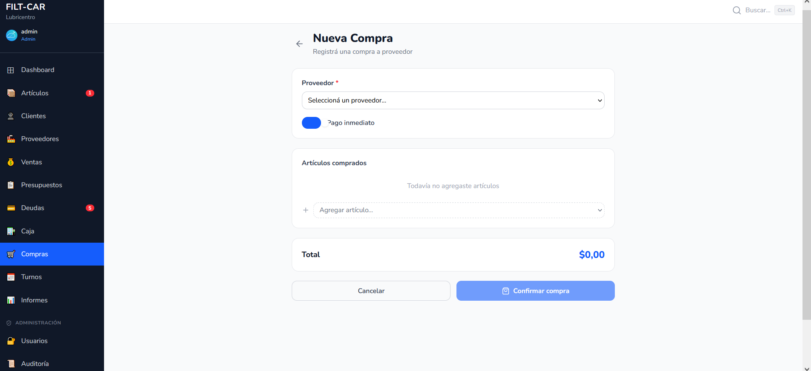
Las compras son el camino natural para reponer stock: cada artículo comprado suma directamente a la cantidad disponible en Artículos.
El módulo de Turnos es la agenda del lubricentro: permite programar citas de clientes con fecha, hora, vehículo y servicio a realizar.
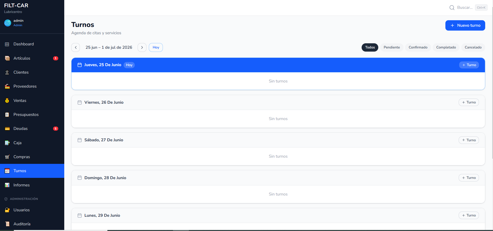
Los turnos se organizan por día, dentro de una semana navegable con las flechas ◄ ► y el botón "Hoy" para volver a la fecha actual. Las pestañas Todos / Pendiente / Confirmado / Completado / Cancelado filtran los turnos por estado.
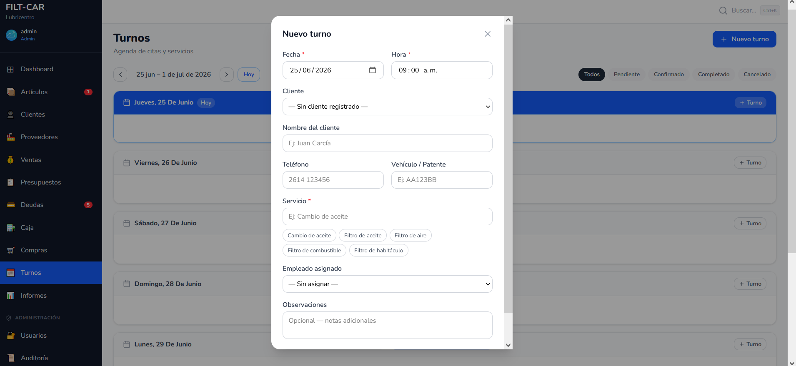
Hacé clic en "+ Turno" (general o de un día puntual) y completá:
| Campo | Descripción |
|---|---|
| Fecha y hora | Cuándo se realizará el turno |
| Cliente | Elegí uno registrado o escribí nombre y teléfono manualmente |
| Vehículo / Patente | Datos del vehículo que se va a atender |
| Servicio | Tipo de trabajo (hay chips rápidos: cambio de aceite, filtro de aceite, de aire, etc.) |
| Empleado asignado | Quién va a atender el turno (opcional) |
| Observaciones | Notas adicionales (opcional) |
A medida que avanza el día, marcá cada turno como Confirmado, Completado o Cancelado según corresponda, para mantener la agenda al día.
La sección Informes analiza la actividad comercial del lubricentro: ventas, compras, ticket promedio y resultado, con la posibilidad de elegir distintos períodos.
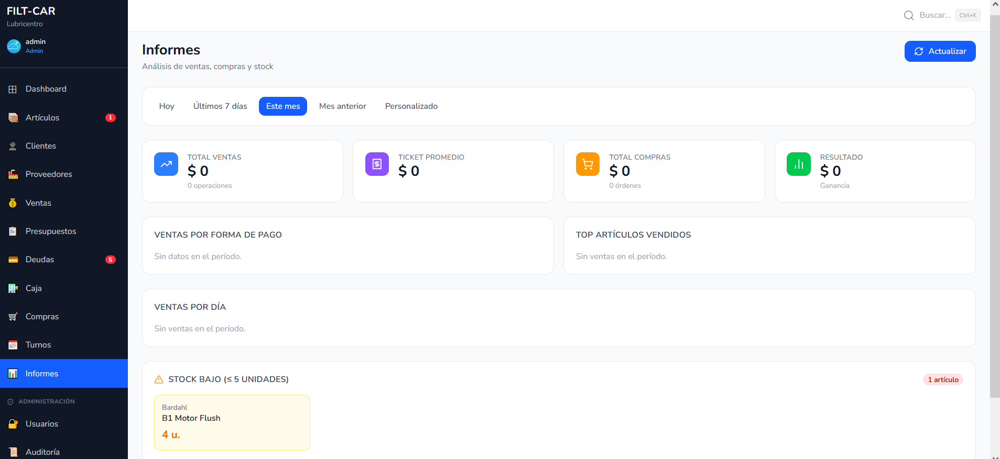
Elegí entre Hoy, Últimos 7 días, Este mes, Mes anterior o un rango Personalizado. Todos los KPIs y gráficos de la pantalla se recalculan según el período elegido. El botón "Actualizar" vuelve a consultar los datos más recientes.
| Indicador | Qué muestra |
|---|---|
| Total ventas | Suma de todas las ventas del período |
| Ticket promedio | Monto promedio por venta |
| Total compras | Suma de todas las compras del período |
| Resultado | Ventas menos compras del período (ganancia bruta) |
Ventas por forma de pago y Top artículos vendidos desglosan el período, mientras que Ventas por día muestra la evolución diaria. La sección Stock bajo lista los artículos por debajo del umbral mínimo configurado, para anticipar reposiciones.
La sección Usuarios gestiona quién puede ingresar al sistema y con qué rol. El Administrador tiene acceso completo; el Empleado Admin puede consultarla en modo de solo lectura.
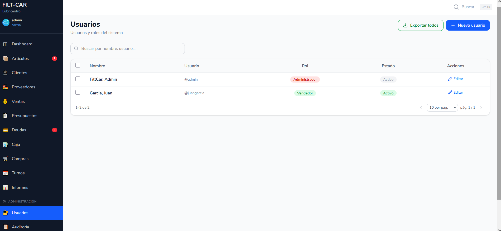
Cada fila muestra nombre, usuario, rol (con una badge de color) y estado (Activo/Inactivo). El buscador filtra por nombre o usuario.
Hacé clic en "+ Nuevo usuario" y completá nombre, apellido, usuario, contraseña inicial y rol (Administrador, Empleado Admin o Empleado Ventas).
Desde "Editar" podés cambiar el nombre, el rol o restablecer la contraseña de un usuario. Para dar de baja a alguien, desactivá su usuario en lugar de eliminarlo: así conserva su historial de acciones en la Auditoría.
Si tu rol es Empleado Admin, vas a ver esta lista pero los botones de crear, editar y desactivar no estarán disponibles: el acceso es de solo lectura.
La Auditoría registra automáticamente cada acción importante que se realiza en el sistema: quién la hizo, qué hizo y cuándo. Es visible únicamente para el rol Administrador.
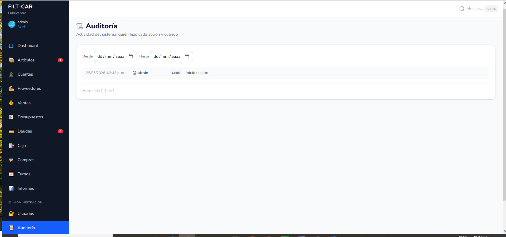
Cada fila muestra fecha y hora, usuario que realizó la acción, una etiqueta de color con el tipo de acción, y una descripción legible de lo sucedido. Entre las acciones registradas:
Usá los campos "Desde" y "Hasta" para acotar la búsqueda a un rango de fechas puntual. La lista se pagina automáticamente cuando hay muchos registros.
La Auditoría es de solo lectura: sirve para entender qué pasó y quién lo hizo, pero no permite revertir ni modificar acciones ya realizadas.